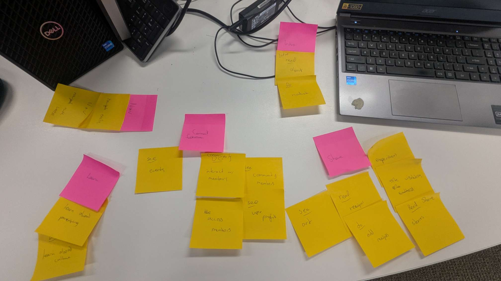

Site Map
This page shows the site map design for my communities webpage.
In this section of the webpage, users will be able to learn about parenting, culture and language
A rich supply of parenting resources. This section of the websites supports social cohesion and maintainence of Cultural Heritage through providing support to parents of the community.
Uniquely relevant cultural resources providing information on both Culture and History. This section directly supports the maintainence of the communities' cultural and Heritage values.
An array of resources for learning the Turrbal language. This secton of the website also assists in maintaining and expressing the value of culture.
In this section of the webpage, users will be able to connect with other users through physical events and online interactions.
This section of the website will showcase upcoming community events with all the relevant information. The open sharing of events strengthens social cohesion and promotes inclusivity.
A place for mentors and mentees to find each other. Further supports social cohesion and inclusivity by creating opportunity to form genuine relationships. The mentor program also helps to encourage the learning of culture and heritage.
Here user's will be able to create their individual user profiles. By being able to create a customisable profile, users will be able to demonstrate their unique characterisics.
In this section of the webpage, users will be able to share community relevant information such as experiences, art and traditonal recipes.
A showcase of traditonal and contemporary art by community members. Encourages uniqueness and supports an empowering culture.
Individuals will be able to share community relevant stories and experiences. This section will further support social cohesin by providing another way to connect. Also emphasises history and tradition.
A showcase of traditonal and contemporary recipes. The community recipe book supports social cohesion and uniqueness by sharing community recipes. The sharing of traditonal recipes strengthens connection to history and culture.